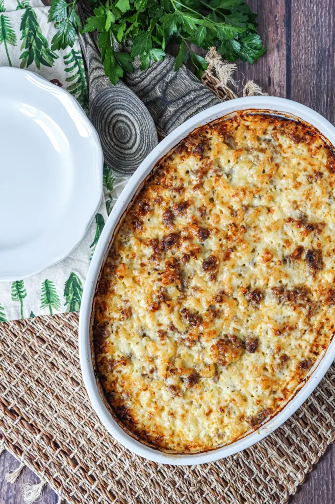

Macaroni Casserole

Description
This is a common household dish in the land of a thousand lakes. Finland or Suomi.
The Finnish macaroni casserole is simple and can feed a lot of people if needed. It is popular amoungst children so having this recipe under your belt will help.
Now let's get into it.
Ingredients
- Macaroni Pasta
- Cheese
- Ground Beef
- Curry
- Salt and Pepper
- Paprika
- Ketchup
Steps
- Start by boiling water for the pasta.
- Pour in the pasta and start cooking the meat.
- Season the meat and stir occasionally
- After about 10 minutes take out the pasta.
- Continue cooking the meat until done.
- Toss in the pasta and season everything again.
- Toss in the cheese and let it melt a little bit.
- Plate the casserole and top it with ketchup.
- Serve to your happy fucking family.